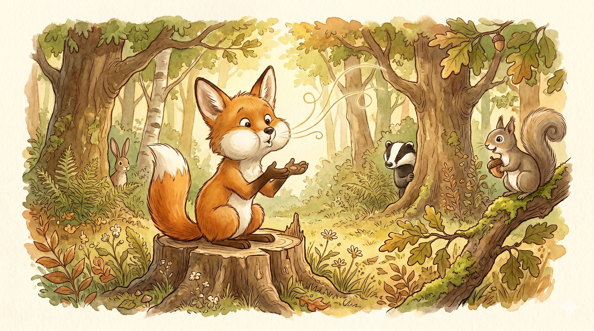
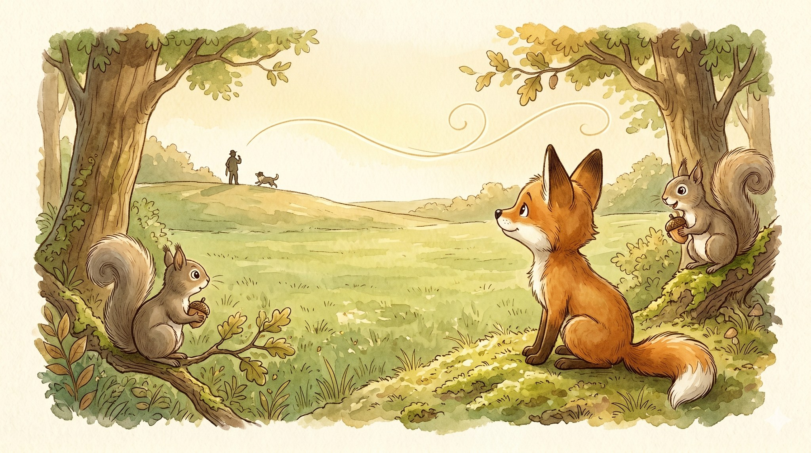
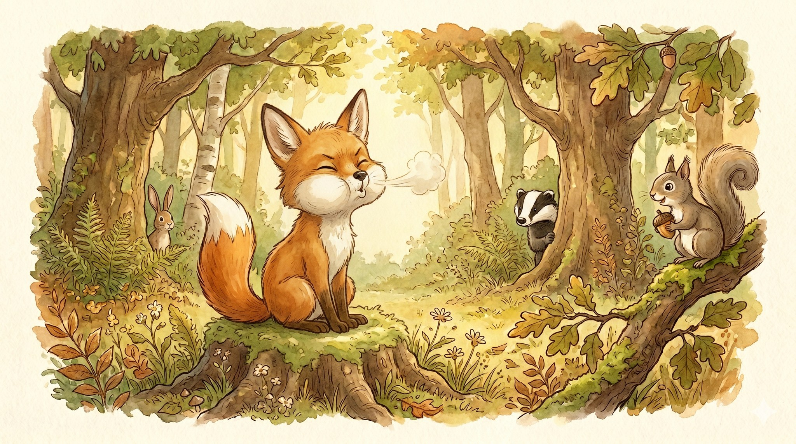
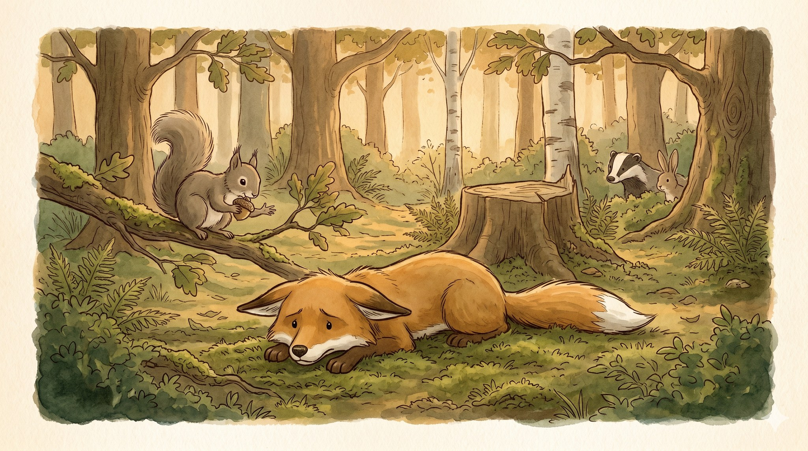
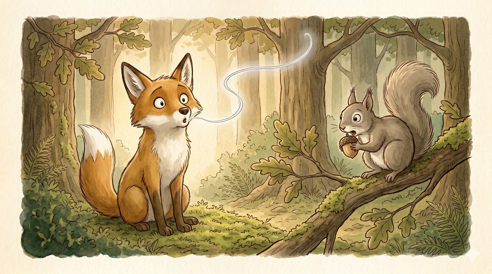
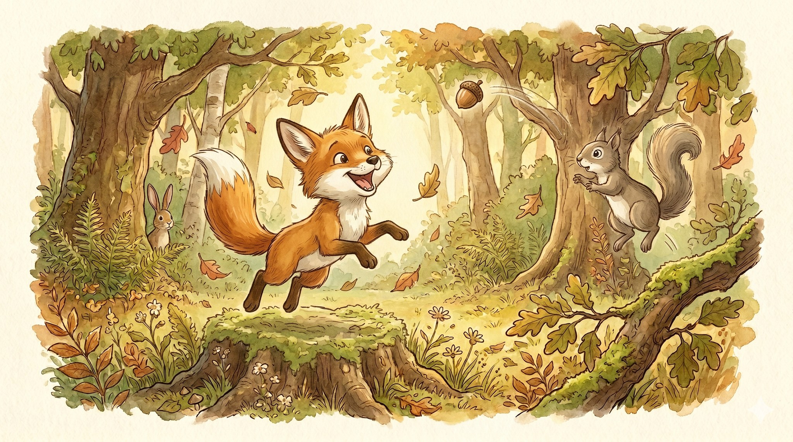

Tuli's Whistle

A story for ages 5–9 about keeping going when the middle gets hard

One morning, Tuli the young fox heard a shepherd whistle.
One clean, bright note sailed across the whole field, and a dog came running from far, far away.
The sound landed in Tuli's chest and stayed there. A whistle could call your friends. A whistle was a song that fit inside your mouth.
"I want one," said Tuli. "I want one very much."

Tuli found a sunny patch of moss. He made a careful little O with his mouth, just like the shepherd. He took a breath. He blew.
"PFFFFFF."
No whistle.
He tried again. "PFFFFFFFFFF."
No whistle.
A squirrel watched from a low branch, nibbling an acorn very, very slowly, the way you do when you have found a good show.
"You are not whistling," said the squirrel.
"I know," said Tuli. And he blew again.

Tuli tried all morning. Pff. Pfff. Pffffff. By afternoon his mouth was so tired he flopped onto the moss with a thump.
"Maybe I just cannot whistle," he said.
"Maybe," said the squirrel kindly. "Or maybe you can. Just not yet. Most things start as cannot-yet. The middle part is the hard part: boring, and tiring, and it doesn't feel like it's working. But it is. That's where most foxes give up."

Tuli sat up. He took a careful breath. He made the careful O.
"Pff." Nothing.
He did not stop. He tried again.
And then —
"PFEEEE."
A whistle! A tiny, thin, wobbly whistle. But a whistle, sure as sunlight.
Tuli froze. The squirrel froze, acorn halfway to its mouth.
"DID YOU HEAR THAT?" shouted Tuli.
"I heard it!" said the squirrel.

Tuli leapt off the moss, all four paws in the air. The squirrel hopped straight up on its branch, acorn flying.
The whistle had been small. It had been short. But it was Tuli's. And now he knew that he could.
"I am going to do that again," he said.
And he did. Every day. And by the end of the week, when the shepherd whistled across the field, a small, proud whistle answered from the woods.